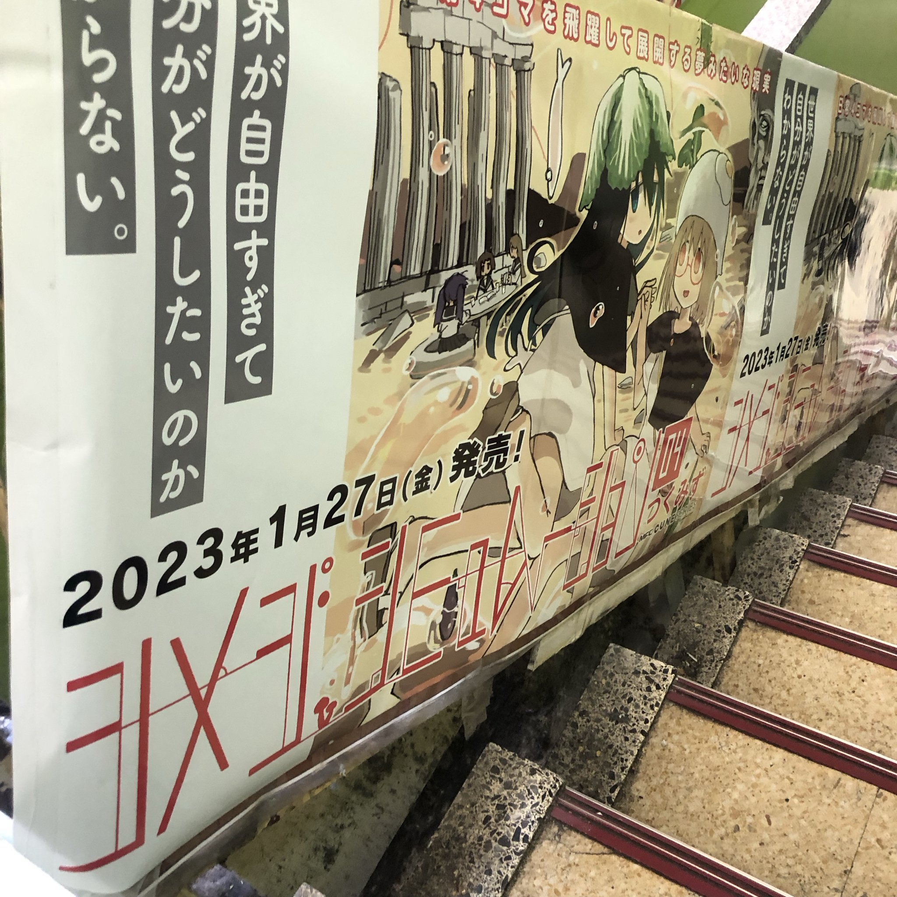

R501
1/1
神社で転んだのか顔の辺りすごい血が出てる人がいてかわいそうだった
今年の目標どうしよう
近年あまり立ててない
というかすぐ忘れてるだけか
実家脱出
サイレントギターを買いギターを弾く時間を増やす
とか
物語も描きたい
絵も
ネット空間を作る
1/11
普段超絶真面目人間だからメタヴァースに沈んで人間辞めたいなと思うときがある。
AだからB、BだからC、CだからD。
最近ラボ行くたびに人々から嫌な風に見られているのではないかということばかり考
最近というより、2年くらい前からずっとだ。
猜疑心がぐるぐるとぐろを巻いている
ぐるぐるぐるぐる
疑心暗鬼が永遠に止まらない
いつもいつもいつも
これってもしかして病気だったりするのかな
病気のせいにして楽に、楽に、楽に
どうしてだろう
大学生の頃は周りをあまり気にせずもっと図々しく生きていられたような気がするのに。
「図々しく生きましょうよねえ～」
むしろ高一の頃に戻ってしまったみたいな感じだ
あのときはある意味毎日が地獄だった
地獄というか熱く煮えたぎった激しさがあるものではなくもっと冷たい悲しいものだった気がする
つらかった
やばくなったら人に相談とかしよう
視界が滲む
1/14
何でもやり直せる最強幻術イザナギをいつでも発動できるように印の組み方を練習は欠かさずに。
1/17
死ぬのが怖くて生きられるかよ
1/18
自分は萌えアニメばかり見てどうしようもない人間だ
心調悪。
あー
しょうもない人間だ
1/21
夜の自分に期待し過ぎている気がする
いろんな物事がどうしようもないことであることを知ると少し楽になる
世界の中心が自分ではないことを知ると少し楽になる
1/28
2ヶ月ぶりくらいにギター触った
You’ve got hide your love away いい曲だ
Fコードがかなり効いている気がする
それでは今から質疑応答に入ります。
はい、それではf先生。
あなたの人生の新規性について教えて下さい
No one i think in my tree.

昨日メロン行ったとき並べられている薄い本たちが誰の作品か分かるようになっていて自分は既にかなり沼
1/30
親に意見言っても無駄なことが分かってるのに言ってしまう
またやってしまった
無駄
早く家を出たい